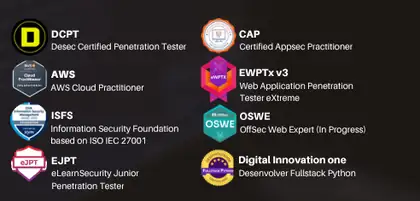
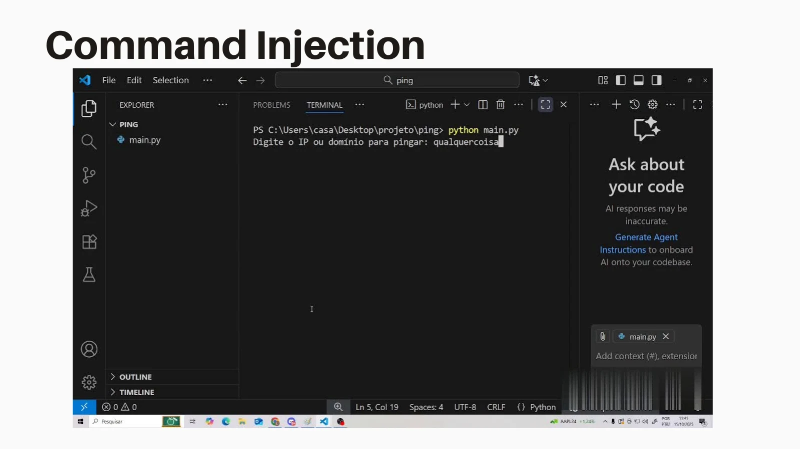
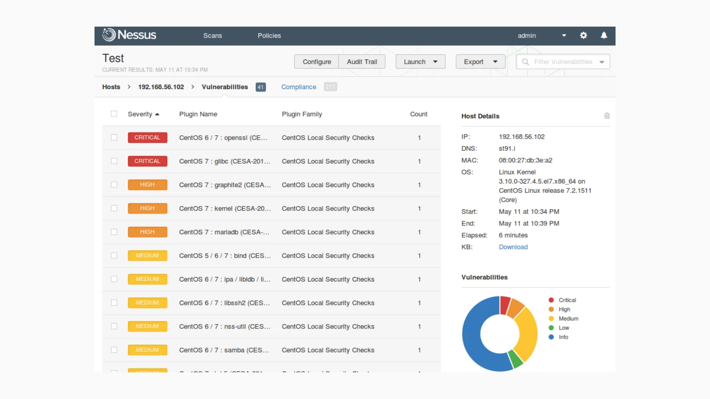
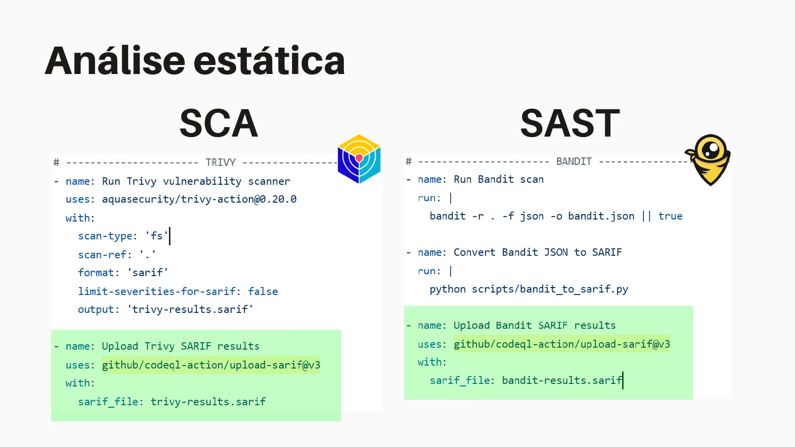
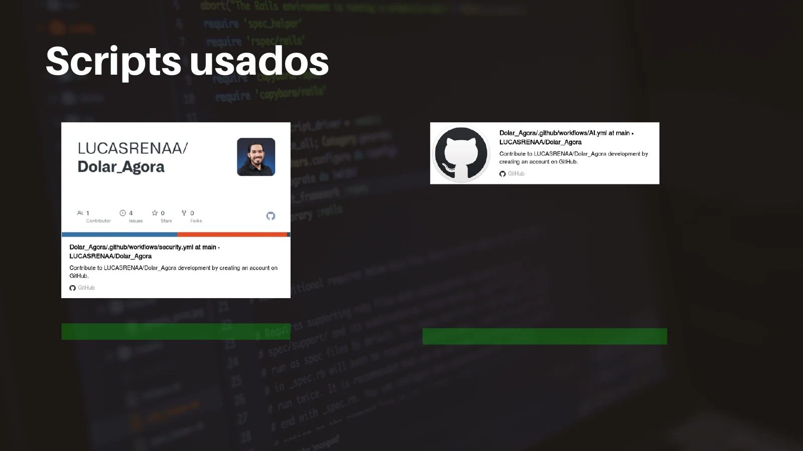

Integrando Segurança no S-SDLC
com uma pipeline open source e IA

Quem sou eu
- Formado em Análise e Desenvolvimento de Sistemas pelo IFPE.
- 7 anos em tecnologia — 5 deles com foco em segurança de aplicações.
- Atuação com Python, automação, segurança e desenvolvimento web.
- Experiência prática em SAST, DAST, threat modeling e pentests.
- Palestras em UPE, UNICAP, IFPE, Rec’n’Play e TDC.
De DevOps para DevSecOps
Segurança deixa de ser uma etapa no fim e passa a nascer junto com o código: shift-left, automação e feedback rápido.
Por que integrar segurança?
- Encontrar problemas enquanto a equipe ainda está projetando e desenvolvendo.
- Reduzir retrabalho e encurtar o caminho entre descoberta e correção.
- Entregar com rapidez, com segurança como responsabilidade compartilhada.
Segurança ao longo do ciclo
Referências para o trabalho
- ASVS: requisitos de verificação para aplicações.
- MASVS: requisitos de segurança para aplicativos móveis.
- OWASP WSTG: guia de testes de segurança web.
Quem participa?
- AppSec: orienta requisitos, modelagem e validação de segurança.
- Desenvolvimento: implementa controles e corrige vulnerabilidades.
- SRE e DBRE: colaboram na operação, infraestrutura e dados.
- PO: participa da priorização e dos critérios de aceitação.
Modelagem de ameaças
- Entender o sistema, seus dados e as fronteiras de confiança.
- Identificar ameaças e possíveis falhas de projeto.
- Transformar cenários de abuso em requisitos e controles.
- Apoio: OWASP Threat Dragon, Microsoft Threat Modeling Tool ou planilhas.
Modelagem com STRIDE

Exemplo de documentação de modelagem de ameaças. · Clique na imagem para ampliar.
Do modelo ao requisito

Exemplo de análise da tela de login no material original. · Clique na imagem para ampliar.
SCA · dependências
- Analisar bibliotecas e componentes usados pela aplicação.
- Identificar dependências com vulnerabilidades conhecidas.
- Avaliar a atualização e validar o efeito da correção.
- Na demonstração: Trivy.
SAST · código-fonte
- Procurar padrões de código potencialmente inseguros.
- Revisar entradas, chamadas perigosas e configurações.
- Investigar achados com o contexto do código.
- Na demonstração Python: Bandit.
Exemplo: “pingue” um IP
import os
ip = input("Digite o IP para pingar: ")
command = f"ping {ip}"
os.system(command)Command injection

Demonstração original do problema no programa de ping. · Clique na imagem para ampliar.
Perguntas para a revisão
- Qual tipo de dado a função deveria aceitar?
- A entrada é validada antes de chegar a uma operação sensível?
- Existem senhas ou outros segredos em texto claro?
- A complexidade dificulta compreender e testar o comportamento?
Validação manual

Tentativa de validação de endereço sem uma biblioteca de parsing. · Clique na imagem para ampliar.
Validar o IP e evitar o shell
import ipaddress
import subprocess
try:
ip = str(ipaddress.ip_address(input("IP: ")))
except ValueError:
print("Endereço IP inválido")
else:
subprocess.run(["ping", "-c", "4", ip], check=True)Exemplo adaptado para Linux: ipaddress integra a biblioteca padrão do Python.
DAST · aplicação em execução
- Testar o comportamento da aplicação por suas interfaces.
- Investigar vulnerabilidades observáveis durante a execução.
- Executar os testes em um ambiente de teste autorizado.
- Na pipeline apresentada: OWASP ZAP.
Resultados da análise dinâmica

Painel de achados exibido na apresentação antiga. · Clique na imagem para ampliar.
Ferramentas que entram na pipeline
Mapear fluxos, ativos, fronteiras de confiança e cenários de abuso antes do código.
Análise estática para localizar padrões inseguros e problemas no código.
Detectar credenciais, tokens e segredos expostos no repositório.
Vulnerabilidades em containers, sistema operacional, pacotes e repositórios.
Complemento: scripts automatizados e scanners dinâmicos para validar a aplicação em execução.
Pipeline Open Source + IA
Controles pequenos, automatizados e contextualizados ao longo da entrega.
CI/CD: integrar e entregar
- Integração contínua: integrar mudanças com frequência e executar build e testes automatizados.
- Entrega contínua: manter um artefato validado e pronto para implantação.
- A pipeline conecta essas etapas e inclui verificações de segurança.
GitHub Actions
- Automatizar build, testes e deploy a partir de eventos do repositório.
- Organizar a execução em workflows, jobs e steps.
- Também automatizar labels, issues e outras tarefas do repositório.
Um primeiro workflow
name: Build Simples
on: [push]
jobs:
build:
runs-on: ubuntu-latest
steps:
- uses: actions/checkout@v4
- name: Hello World
run: echo "O workflow foi executado!"Onde os jobs executam?
- GitHub-hosted: ambiente hospedado pelo GitHub, pronto para executar o workflow.
- Self-hosted: ambiente provisionado e administrado pela própria equipe.
- A escolha considera manutenção, personalização e acesso aos ambientes necessários.
Vamos pôr a mão na massa
- Disparar o workflow com uma alteração no repositório.
- Executar Trivy para dependências e Bandit para Python.
- Guardar os relatórios e inspecionar os achados.
- Executar ZAP contra a aplicação no ambiente de teste.
Workflow em execução

Registro da execução no GitHub Actions. · Clique na imagem para ampliar.
Trivy: achado de dependência

Exemplo de vulnerabilidade encontrada na demonstração original. · Clique na imagem para ampliar.
Bandit: achado no código

Exemplo de segredo em código apontado na demonstração. · Clique na imagem para ampliar.
Publicar os relatórios

Etapas de análise estática e envio dos resultados SARIF. · Clique na imagem para ampliar.
ZAP na pipeline

Configuração da análise dinâmica apresentada no PDF. · Clique na imagem para ampliar.
Bônus: IA comenta no PR

Comentário produzido pela integração experimental de IA. · Clique na imagem para ampliar.
Evolução do experimento
- No material antigo: ampliar a análise de código pela IA.
- Aprimorar a qualidade dos comentários e avaliar os resultados.
- A seguir: conectar esse experimento à proposta de triagem e contexto do HTML atual.
Quando programar deixa de ser o gargalo
Mais código gerado em menos tempo significa também mais superfície para revisar.
Do alerta ao contexto
Exemplo conceitual: menos ruído,
mais foco humano.
Como a IA muda o S-SDLC
Artefatos vivos de intenção — como intent.md — ajudam humanos e agentes a compartilhar contexto, restrições e critérios de segurança.
IA ajuda a elaborar casos de teste, cenários negativos, validações e evidências junto com a implementação.
Scanners continuam objetivos; IA ajuda na triagem; pessoas concentram energia em código crítico, decisões arquiteturais e risco real.
Scripts usados

Referências dos repositórios mostrados no material original. · Clique na imagem para ampliar.
Muito obrigado!
Automação open source é a fundação. IA adiciona contexto e priorização. A decisão de risco continua humana.